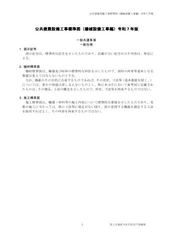
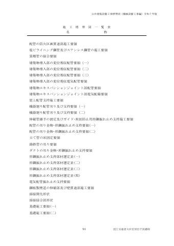
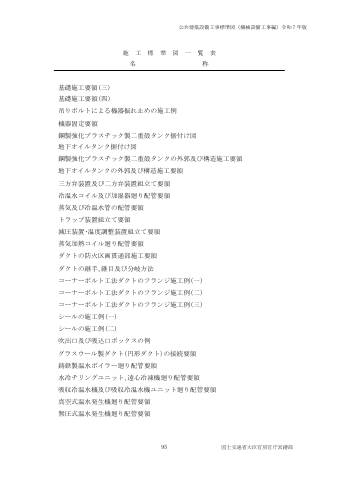
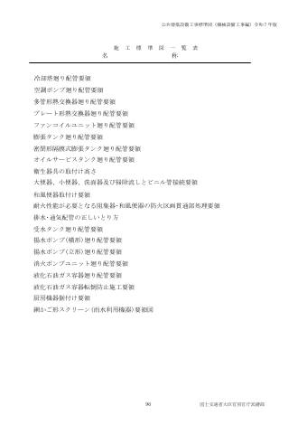
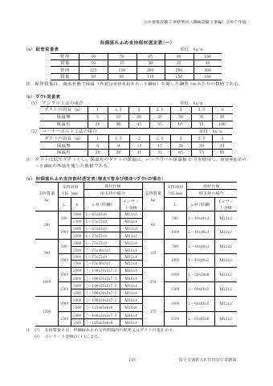
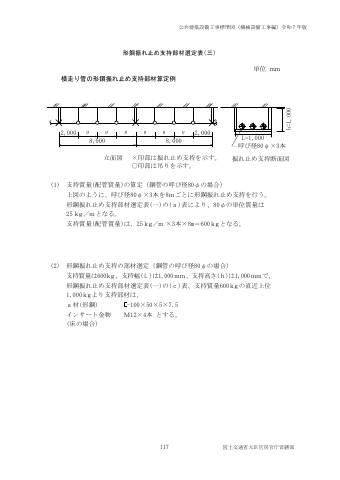
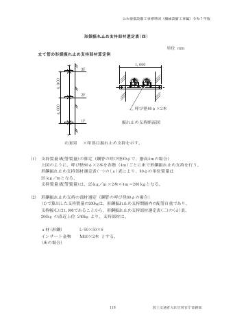

⚙ 工事別
共通事項
全工事にかかわる配管施工の一般事項・保温工事の一般事項。
標準仕様書 条文
第2編 共通工事
2.4.1一般事項第2編

(1) 配管の施工に先立ち、他の設備配管類及び機器との関連事項、維持管理性を詳細に検討し、勾配を考慮して、その位置を正確に決定する。
(2) 配管を建築物内に施工する場合には、工事の進捗に伴う吊り金物、支持金物等の取付け及びスリーブの埋込みを遅滞なく行う。
(3) 配管のスリーブに紙製等の仮枠を使用した部分は、配管施工前に必ず仮枠を取外し、配管施工後にモルタル、ロックウール等で充塡する。
なお、ロックウールを充塡する場合は、脱落防止の処置を施す。
(4) 分岐又は合流する場合は、クロス継手を使用せず、必ずＴ継手を使用するものとするが、１つのＴ継手で相対する２方向への分岐又は相対する２方向からの合流に用いてはならない。ただし、通気及びスプリンクラー消火配管を除く。
(5) 建築物導入部配管で不等沈下のおそれがある場合は、特記により、標準図（建築物導入部の変位吸収配管要領（一））のフレキシブルジョイントを使用した方法で施工する。ただし、排水及び通気配管を除く。
(6) 建築物エキスパンションジョイント部の配管要領は、標準図（建築物エキスパンションジョイント部配管要領）による。
(7) 伸縮管継手を設ける配管には、その伸縮の起点として有効な箇所に、標準図（伸縮管継手の固定及びガイド・座屈防止用形鋼振れ止め支持施工要領）による固定及びガイドを設ける。
(8) 給水、給湯、開放系の冷温水及び冷却水配管で、機器接続部の金属材料と配管材料のイオン化傾向が大きく異なる場合（鋼とステンレス、鋼と銅）は、絶縁継手を使用し絶縁を行うものとする。
なお、設置箇所及び絶縁継手の仕様は特記による。
(9) 塩ビライニング鋼管、耐熱性ライニング鋼管及びポリ粉体鋼管と給水栓、銅合金製配管附属品等との接続で、絶縁を要する場合の継手は、JPF MP 003「水道用ライニング鋼管用ねじ込み式管端防食管継手」及び JPF MP 005「耐熱性硬質塩化ビニルライニング鋼管用ねじ込み式管端防食管継手」に規定する器具接続用管端防食管継手を用いる。
(10) 配管に取付ける計器取付用短管（タッピング等）は、配管材料と同材質とする。
(11) 配管完了後、管内の洗浄を十分行う。
なお、飲料水管の場合は、末端部において遊離残留塩素が 0.2mg/L 以上検出されるまで消毒を行う。
(12) 揚水ポンプ、消火ポンプ、冷却水ポンプ及び冷温水ポンプに取付ける呼び径 50 以下の逆止弁には、呼び径 15 以上のバイパス管及び弁を取付ける。ただし、バイパス弁内蔵形は除く。
(13) 銅管（呼び径 32 以下）をはんだ付けしたときは、フラックスを除去するため、速やかに水による管内の洗浄を行う。
(14) 飲料水以外の給水管を設ける場合は、飲料水管との識別を行い誤接続がないこととする。
※表の罫線はテキスト化で崩れます。数値は必ず原本ページ画像で確認してください。
2.5.1一般事項第2編


(1) 管は、全て、その断面が変形しないよう管軸心に対して直角に切断し、その切り口は平滑に仕上げる。
(2) 塩ビライニング鋼管、耐熱性ライニング鋼管、ポリ粉体鋼管及び外面被覆鋼管は、帯のこ盤又はねじ切機搭載形自動丸のこ機等で切断し、パイプカッターによる切断は禁止する。また、切断後、適正な内面の面取りを施す。
(3) 地中配管用の塩ビライニング鋼管、ポリ粉体鋼管及び外面被覆鋼管のねじ加工及びねじ込み作業は、外面被覆材に適した専用工具を使用し、適正トルクで行う。チャック損傷部分は、プラスチックテープ 2 回巻きとする。
(4) ねじ加工機は、自動定寸装置付きとする。また、ねじ加工に際しては、ねじゲージを使用して、JIS B 0203「管用テーパねじ」に規定するねじが適正に加工されているか確認する。
(5) 塩ビライニング鋼管等の防食措置を施した配管と管端防食管継手との接続部は、切削ねじ接合とする。ただし、呼び径 50 以下のポリ粉体鋼管は、転造ねじ接合としてもよい。
(6) 接合する前に、切りくず、ごみ等を十分除去し、管の内部に異物のないことを確かめてから接合する。
(7) 配管の施工を一時休止する場合等は、その管内に異物が入らないように養生する。
(8) 配管加工を工事現場以外で行い、配管に曲がり等がある場合は、搬入及び保管時に、端部や接合部等に荷重が集中しないように養生する。
※表の罫線はテキスト化で崩れます。数値は必ず原本ページ画像で確認してください。
2.8.1一般事項第2編

(1) 建築基準法施行令（昭和 25 年政令第 338 号）第 112 条第 20 項に規定する準耐火構造等の防火区画等を不燃材料の配管が貫通する場合は、その隙間をモルタル又はロックウール保温材で充塡する。また、不燃材料以外の配管が防火区画等を貫通する場合は、建築基準法令に適合する工法とする。
なお、施工要領は、標準図（配管の防火区画貫通部施工要領）による。
(2) 保温を行わない配管で、天井、床、壁等を貫通する見え掛り部には、管座金を取付ける。
(3) 外壁を貫通する配管とスリーブとの隙間は、バックアップ材等を充塡し、シーリング材によりシーリングし、水密を確保する。
(4) 地中部分で水密を要する部分のスリーブは、つば付き鋼管とし、配管はスリーブと触れないように施工する。
※表の罫線はテキスト化で崩れます。数値は必ず原本ページ画像で確認してください。
2.9.1一般事項第2編
3.1.1一般事項第2編

3.1.2材料第2編


(1) 保温材（保冷材及び防露材を含む。）、外装材及び補助材は、表 2.3.1 による。
(2) 本項で規定する保温材、外装材及び補助材を屋内で使用する場合のホルムアルデヒド放散量は、JIS 等の材料規格において放散量が規定されている場合、特記がなければ、F☆☆☆☆とする。
表2.3.1 保温材、外装材及び補助材
材 料 区 分 仕 様
保 ロックウール保温材 ロックウール保温板、保温筒、保温帯、フェルト及びブランケットは、JIS
温 A 9504「人造鉱物繊維保温材」のロックウールによるものとし、保温板は１号
材
又は２号、保温帯は１号、フェルトは密度40kg/ｍ ３ 以上、ブランケットは１
号とする。
ブランケットは、JIS G 3554「きっ甲金網」による亜鉛めっきを施した網目
呼称16、線径0.55の金網又はRWAS02「ロックウール保温材のブランケットに使
用するメタルラス品質規格」による平ラスで外面を補強したものとする。
アルミガラスクロス化粧保温板、保温筒、保温帯又はフェルトは、上記保温
板、保温筒、保温帯又はフェルト（JISに規定されている表面布は不要）の表
面をアルミガラスクロスで被覆したものとする｡
ガラスクロス化粧保温板は、上記保温板（JISに規定されている表面布は不
要）の表面をガラスクロスで被覆したものとする。
グラスウール保温材 グラスウール保温板、保温筒、保温帯及び波形保温板は、JIS A 9504「人造
鉱物繊維保温材」のグラスウールによるものとし、保温板、保温筒、保温帯及
び波形保温板は40K以上のものとする。
アルミガラスクロス化粧保温板、保温筒、保温帯又は波形保温板は、上記保
温板、保温筒、保温帯又は波形保温板（JISに規定されている表面布は不要）
の表面をアルミガラスクロスで被覆したものとする｡
ガラスクロス化粧保温板は、上記保温板（JISに規定されている表面布は不
要）の表面をガラスクロスで被覆したものとする。
ポリスチレン ポリスチレンフォーム保温板及び保温筒は、JIS A 9511「発泡プラスチック保温
フォーム保温材 材」のビーズ法ポリスチレンフォームによるものとし、保温板及び保温筒は３号と
する。
アルミガラスクロス化粧保温板又は保温筒は、上記保温板又は保温筒（JISに規
定されている表面布は不要）の表面をアルミガラスクロスで被覆したものとする。
弁類、継手カバー等は、原則として、金型成形したもので、品質は上記保温筒の
規格に適合するものとする。
外 塗装亜鉛系めっき鋼 JIS G 3312「塗装溶融亜鉛めっき鋼板及び鋼帯」で、めっきの付着量が Z18 以
装 板 上のもの又は JIS G3322（塗装溶融 55％アルミニウム－亜鉛合金めっき鋼板及
材
び鋼帯）で、めっきの付着量が AZ90 以上のものとし、板厚は、保温外径 250mm
以下の管、弁等に使用する場合は 0.27mm、その他は 0.35mm とする。
ステンレス鋼板 JIS G 4305「冷間圧延ステンレス鋼板及び鋼帯」によるものとし、板厚は、
管、弁等に使用する場合は0.2mm以上、その他は0.3mm以上とする。
溶融アルミニウム－ JIS G 3321「溶融55％アルミニウム－亜鉛合金めっき鋼板及び鋼帯」で、め
亜鉛鉄板 っき付着量150ｇ/ｍ ２ 以上のものとし、板厚は、保温外径250mm以下の管、弁
等に使用する場合は0.27mm、その他は0.35mmとする。
合成樹脂製カバー１ 合成樹脂を使用した難燃性の樹脂製カバーは、JIS A 1322「建築用薄物材料
(シートタイプ) の難燃性試験方法」に規定する防炎２級に合格したもので板厚は、0.3mm以上
とする。合成樹脂製カバー用ピンは銅合金製とし、樹脂製カバーの重ね部分を
保持できる強度及び形状を有するものとする。
合成樹脂製カバー２ 合成樹脂を使用した難燃性の樹脂製カバーは、JIS A 1322「建築用薄物材料の難
(ジャケットタイプ) 燃性試験方法」に規定する防炎２級に合格したもので板厚は、0.5mm以上とする。
接合は、合成樹脂製カバー用差込みジョイナーと50mmピッチのボタンパンチ加工さ
れたものとし、保温材又はカバーの反発力で外れないものとする。
合成樹脂製カバー3 合成樹脂を使用した難燃性の樹脂製カバーは、JIS A 1322「建築用薄物材料
(保温化粧カバータイ の難燃性試験方法」に規定する防炎２級に合格したもので板厚は、1.0mm以上
プ) とする。樹脂製カバー同士を接合できる強度及び形状を有するものとする。
ガラスクロス JIS R 3414「ガラスクロス」に規定するEP18AによるEガラス平織ガラスクロ
スとし、ダクト類の内貼りの押さえとして使用する。
アルミガラスクロス 厚さ0.02mmのアルミニウム箔に、JIS R 3414「ガラスクロス」に規定するEP
11Eをアクリル系接着剤で接着させたものとし、管等に使用する場合は、適当
な幅に裁断し、テープ状にしたものとする。
アルミガラスクロス アルミガラスクロスのガラスクロス面に粘着剤を粘着加工し、剥離紙をもっ
粘着テープ てその粘着力を保持したものとし、JIS Z 0237「粘着テープ・粘着シート試験
方法」による粘着力1.5Ｎ/10mm以上のものとする。
着色アルミガラス アルミガラスクロスの表面にアクリル系塗料を焼付塗装（焼付温度240℃以
クロス 上、着色塗布量４ｇ/ｍ ２ 以上）したもの。
保温化粧ケース 保温化粧ケースは樹脂製、アルミ合金製、溶融アルミニウム－亜鉛鉄板、鋼
板若しくは鋼材に溶融亜鉛めっきを施したもの、溶融亜鉛めっき鋼板製に粉体
塗装仕上げをしたもの又はステンレス鋼板製等とする。また、樹脂製のものは
耐候性を有し、－20℃から60℃に耐えるものとする。
アルミパンチング JIS H 4000「アルミニウム及びアルミニウム合金の板及び条」に規定するア
メタル ルミニウム板を穿孔加工したもので板厚は0.6mm以上とし、穿孔開口率は30％
以上60％以下とする。
亜鉛めっき鋼板パン JIS G 3302「溶融亜鉛めっき鋼板及び鋼帯」に規定する溶融亜鉛めっき鋼板を穿孔
チングメタル 加工したもので板厚は0.6mm以上とし、穿孔開口率は30％以上60％以下とする。
アルミガラス化粧原 原紙に規定する整形用原紙の表面に、アルミガラスクロスに規定するアルミ
紙 ガラスクロス面をオレフィン系樹脂接着剤で貼り合わせたものとする。
補 原 紙 １ｍ ２ 当たり370ｇ以上の整形用原紙とする。
助
材 整形エルボ 合成樹脂を使用した難燃性の整形用エルボで、JIS A 1322「建築用薄物材料
の難燃性試験方法」に規定する防炎２級に合格したものとする。
ポリエチレン JIS Z 1702「包装用ポリエチレンフィルム」に規定する１種（厚さ0.05mm）
フィルム とする。
粘着テープ JIS C 2336「電気絶縁用ポリ塩化ビニル粘着テープ」Ａ種(厚さ0.2mm)のも
のとする。
鉄 線 JIS G 3547「亜鉛めっき鉄線」による亜鉛めっき鉄線とする。
鋲 亜鉛めっき鋼板製座金に保温材の厚みに応じた長さの釘を植えたもの、銅め
っきスポット溶接鋲又は絶縁座金付スポット溶接鋲（銅又は銅合金製）とし、
保温材等を支持するのに十分な強度を有するものとする｡
きっ甲金網 JIS G 3547「亜鉛めっき鉄線」による亜鉛めっき鉄線の線径0.4mm以上のも
のを、JISG 3554「きっ甲金網」による網目呼称16により製作したものとす
る。
銅きっ甲金網 JIS H 3260「銅及び銅合金の線」によるC1100Wの線径0.5mmのものをJIS G 3
554「きっ甲金網」による網目呼称10に準じて製作したものとする。
シーリング材 主成分をシリコン系の１成分形とし、JIS K 6249「未硬化及び硬化シリコー
ンゴムの試験方法」による耐熱温度 120℃のものとする。
鋼 枠 亜鉛鉄板による原板の標準厚さ0.4mm以上のもので加工したものとする。
幅木、菊座及びバン ステンレス鋼板（厚さ0.2mm以上）により製作したものとする。
ド
接着剤 鋲を接着する場合は、合成ゴム系接着剤、エポキシ系接着剤又は変性シリコ
ン系接着剤とする。※表の罫線はテキスト化で崩れます。数値は必ず原本ページ画像で確認してください。
3.1.3施工第2編


(1) 保温の厚さは、保温材主体の厚さとし、外装及び補助材の厚さは、含まないものとする。
(2) 保温材相互の間隙はできる限り少なくし、重ね部の継目は同一線上を避けて取付ける。
(3) ポリスチレンフォーム保温筒は、合わせ目を全て粘着テープで止め、継目は、粘着テープ２回巻きとする。
なお、継目間隔が 600mm 以上 1,000mm 以下の場合は、中間に１箇所粘着テープ２回巻きを行う。
(4) 鉄線巻きは、原則として、帯状材の場合は、50mm ピッチ（スパイラルダクトの場合は 150mmピッチ）以下にらせん巻き締め、筒状材の場合は１本につき２箇所以上、２巻き締めとし、ロックウールフェルト及び波形保温板の場合は、1 枚につき 500mm 以下に１箇所以上、２巻き締めとする。
(5) アルミガラスクロス化粧保温帯、アルミガラスクロス化粧ロックウールフェルト、アルミガラスクロス化粧保温筒及びアルミガラスクロス化粧波形保温板は、合わせ目及び継目を全てアルミガラスクロス粘着テープで貼り合わせ、筒は継目間隔が 600mm 以上 1,000mm以下の場合は中間に１箇所アルミガラスクロス粘着テープ２回巻きとし、スパイラルダクトへの保温帯、フェルト、波形保温板の取付けは、１枚が 600mm 以上 1,000mm 以下の場合は、１箇所以上アルミガラスクロス粘着テープ２回巻きとする。
(6) テープ巻きその他の重なり幅は、原則として、テープ状の場合は 15mm 以上（ポリエチレンフィルムの場合は 1/2 重ね以上）、その他の場合は 30mm 以上とする。
(7) テープ巻きは、配管の下方より上向きに巻き上げる。アルミガラスクロス巻き等で、ずれるおそれのある場合には、粘着テープ等を用いてずれ止めを行う。
(8) アルミガラスクロス化粧原紙の取付けは、30mm 以上の重ね幅とし、合わせ目は 150mm 以下のピッチでステープル止めを行う。合わせ目及び継目を全てアルミガラスクロス粘着テープで貼合わせる。
(9) アルミガラスクロス化粧保温筒のワンタッチ式（縦方向の合わせ目に貼り合わせ用両面粘着テープを取付けたもの。）の合わせ目は、接着面の汚れを十分に除去した後に貼合わせる。
(10) 合成樹脂製カバー１の取付けは、重ね幅は 25mm 以上とし、直管方向の合わせ目を両面テープで貼合せた後、150mm 以下のピッチで、合成樹脂製カバー用ピンで押さえる。立て管部は、下からカバーを取付け、ほこり溜まりのないよう施工する。
(11) 合成樹脂製カバー２の取付けは、合成樹脂製シート端部の差込みジョイナーに、ボタンパンチを差し込んで接合し、エルボ部分と直管部分の継目は、シーリングを行う。立て管部は、下からカバーを取付け、ほこり溜まりのないよう施工する。
(12) 合成樹脂製カバー３の取付けは、はめあい等により、合わせ目が開かないよう、すき間なく施工する。
(13) 金属板巻きは、管の場合ははぜ掛け又はボタンパンチはぜ、曲り部はえび状又は整形カバーとし、長方形ダクト及び角形タンク類ははぜ掛け、継目は差込みはぜとする。丸形タンクは差込みはぜとし、鏡部は放射線形に差込みはぜとする。
なお、タンク類は、必要に応じて、重ね合せの上、ビス止めとしてもよい。屋外及び屋内多湿箇所の継目は、シーリング材等によりシールを施す。シーリング材を充塡する場合は、油分、じんあい、さび等を除去してから行う。また、温度、湿度等の気象条件が充塡に不適当なときは作業を中止する。
(14) 鋲の取付数は、原則として、300mm 角当たりに１個以上とし、全ての面に取付ける。
なお、絶縁座金付銅製スポット鋲以外の場合は、鋲止め用平板（座金）を使用する。
(15) 屋内露出の配管及びダクトの床貫通部は、その保温材保護のため、床面より少なくとも高さ 150mm までステンレス鋼板で被覆する。ただし、外装材に塗装亜鉛系めっき鋼板等の金属板を使用する場合を除く。蒸気管等が壁、床等を貫通する場合には、その面から 25mm 以内は保温を行わない。
(16) 屋内露出配管の保温見切り箇所には、菊座を取付ける。
(17) 保温の見切り部端面は、使用する保温材及び保温目的に応じて必要な保護を行う。
(18) 保温を必要とする機器の扉、点検口等は、その開閉に支障がなく、保温効果を減じないように施工する。
(19) 絶縁継手廻り（絶縁フランジを含む。）は、金属製のラッキングを行ってはならない。
(20) グラスウール保温板（32K）をスパイラルダクトへ取付ける場合は、保温厚さが復元した後に行い、鉄線巻きは 150mm ピッチ以下にらせん巻き締めし、500mm 以下に１箇所以上、２巻き締めとする。
なお、鉄線の締めすぎに注意する。
(21) アルミガラスクロス化粧グラスウール保温板（32K）をスパイラルダクトへ取付ける場合は、保温厚さが復元した後に行い、合わせ目及び継ぎ目を全てアルミガラスクロス粘着テープで貼合わせ、１枚が 600mm 以上 1,000mm 以下の場合は１箇所以上アルミガラスクロス粘着テープ２回巻きとする。
なお、アルミガラスクロス粘着テープの締めすぎに注意する。
※表の罫線はテキスト化で崩れます。数値は必ず原本ページ画像で確認してください。
標準図













